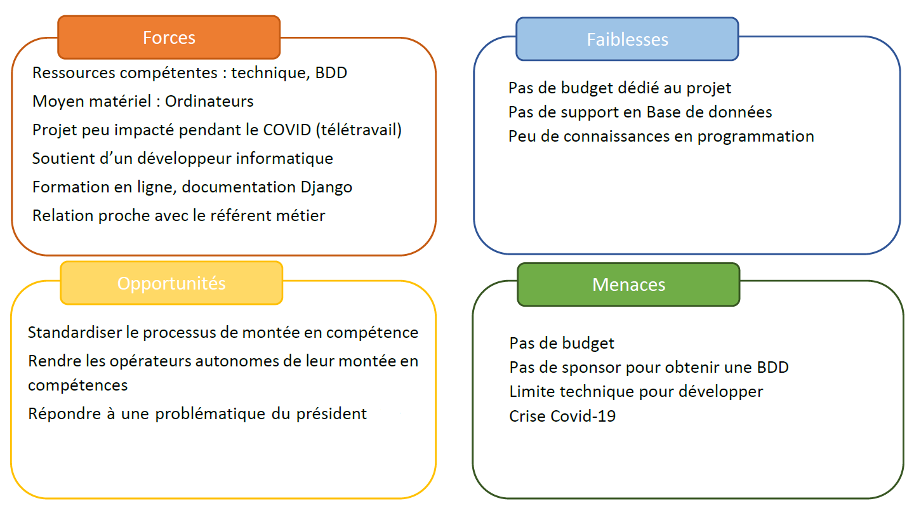
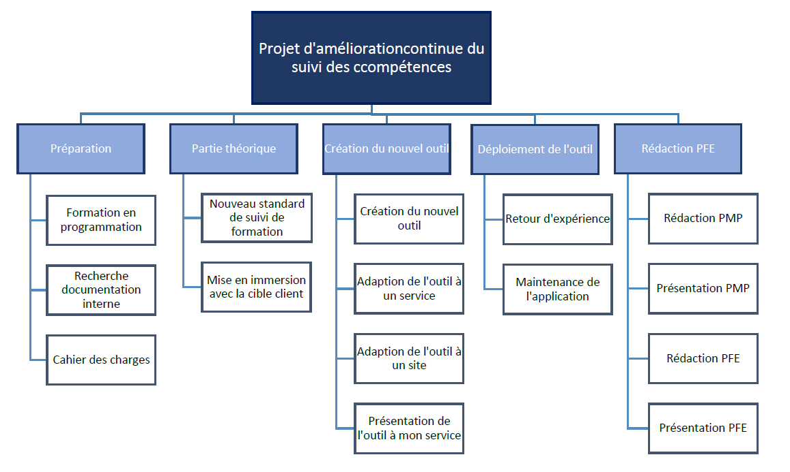
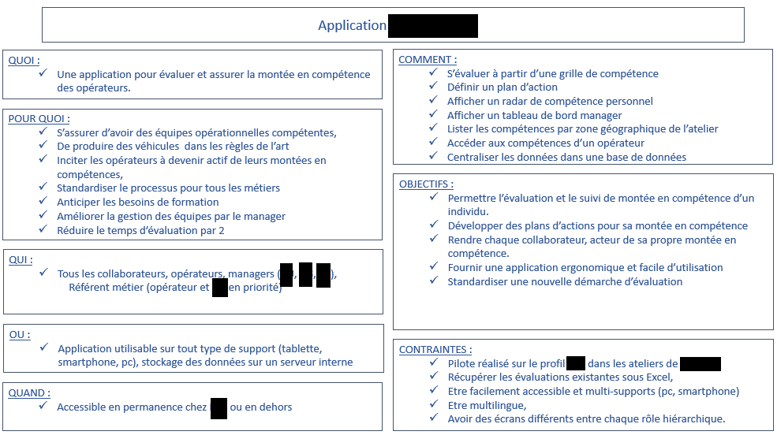
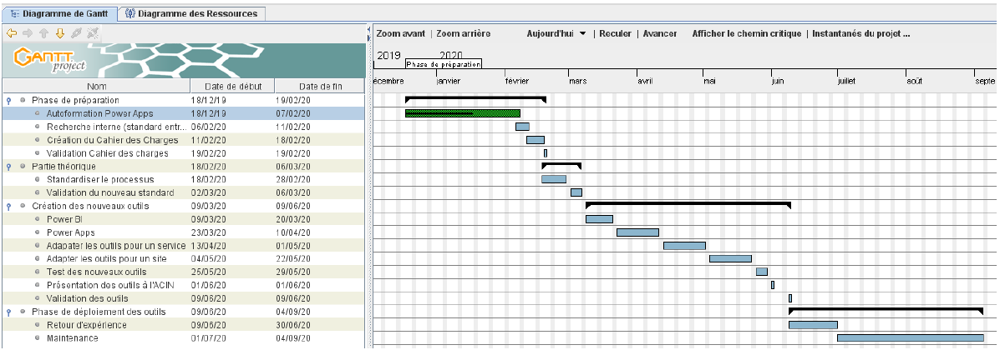

• Pack office + Plateforme Power de Microsoft (Power BI, Power Apps)
• ERP (SAP) --> Extraction de données pour création de KPI
• Framework Django (création d'applications et/ou site internet)
• PyCharmProject --> Logiciel de programmation
• DataGrip, MySQL --> Logiciel pour concevoir et analyser une base de données (principalement SQL, d'autres langages sont utilisable comme PHP...)
• Groupe Safran : soudage par friction inertielle, soudage par faisceau d'électrons, découpage et perçage laser, soudage laser, grenaillage, projection plasma et fabrication additive.
• Groupe PSA : emboutissage, peinture, ferrage, assemblage des différents modules
À travers cette partie, je vais vous démontrer ma méthodologie, lors de ma dernière mission entreprise. Pour moi, une bonne gestion de projet se décompose en 5 étapes :
Avant de me lancer, je fais en sorte de bien comprendre la différence entre l'état final souhaité par le client par rapport au point de départ. Quatre caractéristiques sont à prendre en compte :
• La nouveauté du projet ;
• Sa spécificité ;
• Son aspect clé en main ;
• Sa complexité.
Dans cette partie je réalise une étude de faisabilité, pour cela j'effectue un SWOT (Strengths, Weaknesses, Opportunities, Threats). Cet outil croise les résultats d’un diagnostic interne (forces et faiblesses internes de l’équipe, du service) et ceux d’un diagnostic externe (opportunités et menaces liées à l’environnement).

Ensuite, je m'assure que je possède tous les éléments pour réaliser le cahier des charges en termes de qualité, de coûts et de délais.
Je découpe le projet en différentes tâches, pour cela j'utilise un WBS. Celui-ci m'aide à avoir une vision globale de toute la mission et m'aidera dans la planification des tâches.
Toutes mes actions sont répertoriées même les plus redondantes comme l'écriture d'un rapport, les déplacements, les préparations de réunion.

La gestion de projet demande la mobilisation des différentes parties prenantes. Celles-ci évoluent et se multiplient pendant sa réalisation. En effet, ma dernière mission s'est complexifiée pendant son déroulement, nécessitant des compétences pluridisciplinaires en programmation et infrastructure réseau. Pour cela, j'ai dû persérvérer dans mes recherches, agrandir mon réseau de contact afin de trouver les solutions les plus adaptées au projet.
Tout d'abord, j'ai identifié les collaborateurs clés en fonction de leurs postes, leurs compétences et leurs disponibilités. Je suis parti d'une matrice RACI pour déterminer quel collaborateurs est adapté au besoin. J'ai ensuite préparé un QQOQCP, pour transmettre une vision claire du besoin et donner du sens au projet. Voici, le document concernant mon précédent projet.

Sensible à l'aspect relationnel, je porte une grande considération aux contributeurs, la valorisation de leur participation contribue à nouer une relation de qualité. Comme un manager, j'évalue et coordonne leurs activités liées au projet afin de « Contractualiser » leur engagement et le mien !
Je partage les bonnes informations, les bonnes pratiques et insiste sur les contraintes à respecter. Pour moi, il est important de mettre un point d'honneur concernant leurs influences au projet. J'identifie les leviers de motivation et mets en place un plan d'action. Etant le seul programmeur novice de la mission, je me suis programmé plusieurs points pour monter en compétences.
Enfin, l'ensemble des rôles et des responsabilités est formalisé dans un cahier des charges interne pour assembler toutes les informations dans un seul document.
Plusieurs « freins » peuvent perturber l’évaluation de la charge de travail.
Lors de cette mission, je n'avais pas encore réalisé de projet demandant autant de connaissances techniques en informatique et en programmation. Il est alors difficile d’évaluer correctement la charge lorsqu’on n’est pas habitué à le faire.
Deux outils me permettent de séparer les temps de réalisation du temps nécessaire pour achever une tâche.
Dans cette optique, voici les outils que j'utilise le diagramme de PERT ou le GANTT:
• Le diagramme PERT pour anticiper les tâches pouvant être rallongées avec un faible impact sur le bon déroulement du projet.
• Le diagramme de GANTT pour déterminer les actions par semaines. Voici ci dessous, le diagramme de Gantt utilisé lors de mon dernier projet.
Lorsque les délais de production sont réduits, je réalise uniquement un diagramme de Gantt (comme ci-dessous lors de mon précédent projet).

L’animation de projet est décisive et permet de fiabiliser la pérennité de la mission. pour chaque projet, je réalise 3 type de réunions :
Celle de lancement pour informer les contributeurs du rôle de chacun et rechercher un consensus de départ.
Des réunions d’avancement pour suivre la réalisation du projet, examiner les écarts et prendre des mesures correctives.
Une phase de clôture pour permettre d'informer l’équipe des résultats, de féliciter les contributeurs et de tirer des enseignements afin d’optimiser les projets suivants.
Autre aspect du management d'équipe : la gestion des conflits.
Lors de mes précédents projet, les équipes étaient plutôt flexibles. Dans quelques j'ai dû comprendre l'intérêt de la personnes réfractaire pour arriver à sa position et obtenir un engagement.
La gestion de projet conduit à déléguer certaines tâches ou activités. Cependant, je suis le garant du projet, des points de contrôle me permettent de constituer un gage de sécurité.
Ce suivi est annoncé dès la réunion de lancement. mes tableaux de bord sont construits par TCD ou avec le logiciel Power BI. Ces outils me permettent une meilleure approche et de visualiser les informations en temps réel.
Enfin, la communication joue un rôle primordial, elle permet de connaître les valeurs qui guident chaque contributeur. Ainsi j'adapte ma communication suivant différents styles et adopte une attitude susceptible de stimuler les uns et les autres.
Voici un exemple d'analyse de données réalisé à l'aide du logiciel Power BI. Cet exemple est à titre de démonstration, les données sont factices.
Le fichier est cliquable pour les versions PC, si vous voulez un rendu dynamique sur smartphone n'hésitez pas à utiliser le lien ci-dessous:
L'exercice compare les coûts de revient entre 3 usines de production dans le domaine informatique (ordinateur, tablette, téléphone). Dans cet exemple, nous pouvons constater que les ordinateurs génèrent le plus de bénéfice à l'entreprise. Cependant, l'usine C est la plus rentable sur l'ensemble des 3 produits.
Comme vous pouvez le constater, mon projet de site web fonctionne, aujourd'hui je suis en phase de test. La navigation entre les pages représente ce succès, en dehors d'une démonstration, penchons-nous un peu sur le langage de programmation. Veillez trouver dans la fenêtre "CODEPEN" (ci-dessous), une partie du code nécessaire à l'affichage de la page.
Si vous souhaitez avoir plus de renseignements sur la conception du site, n'hésitez pas à afficher le code source du site. Pour cela, faites un clic droit n'importe où à l'écran, puis "Afficher le code source de la page".
Projet en cours de création, ici j'ai repris mes cours pour conserver une culture des possibilités de création en CAO. Mon objectif est de retourner sur les bases de la CAO (lecture + utilisation du logiciel Catia V5) pour de futurs projets dans ma vie personnelle.